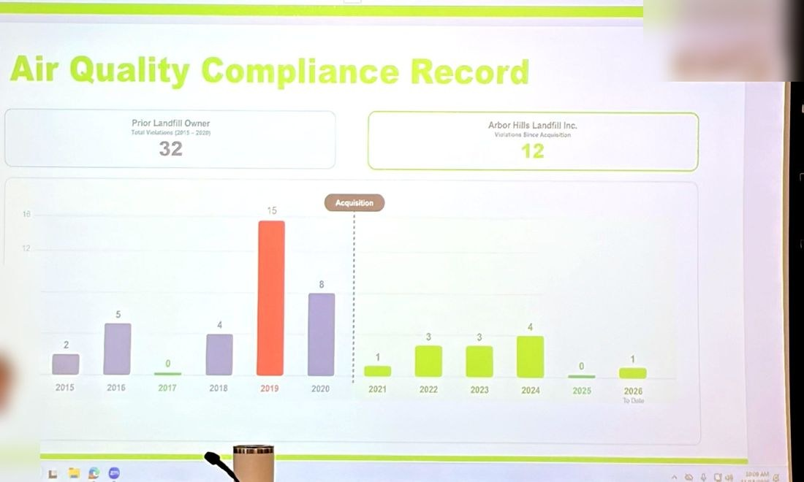
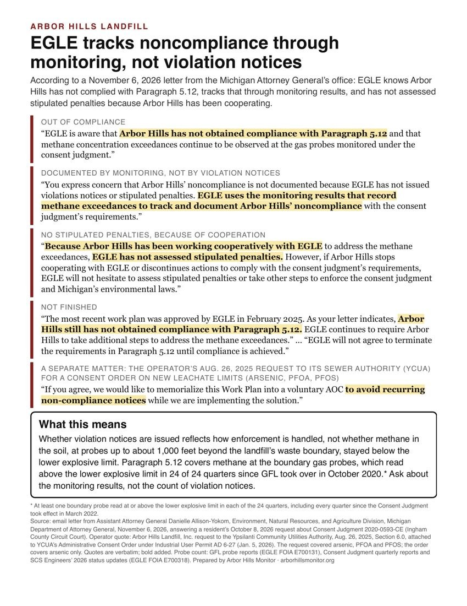
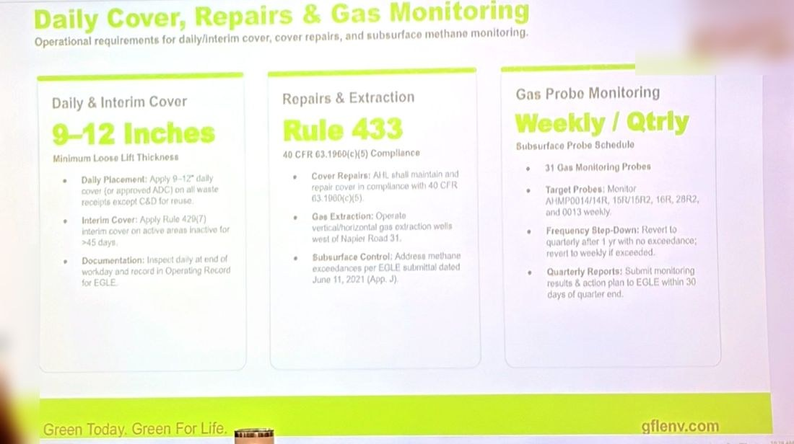
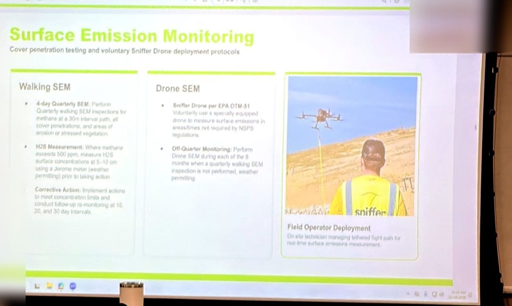
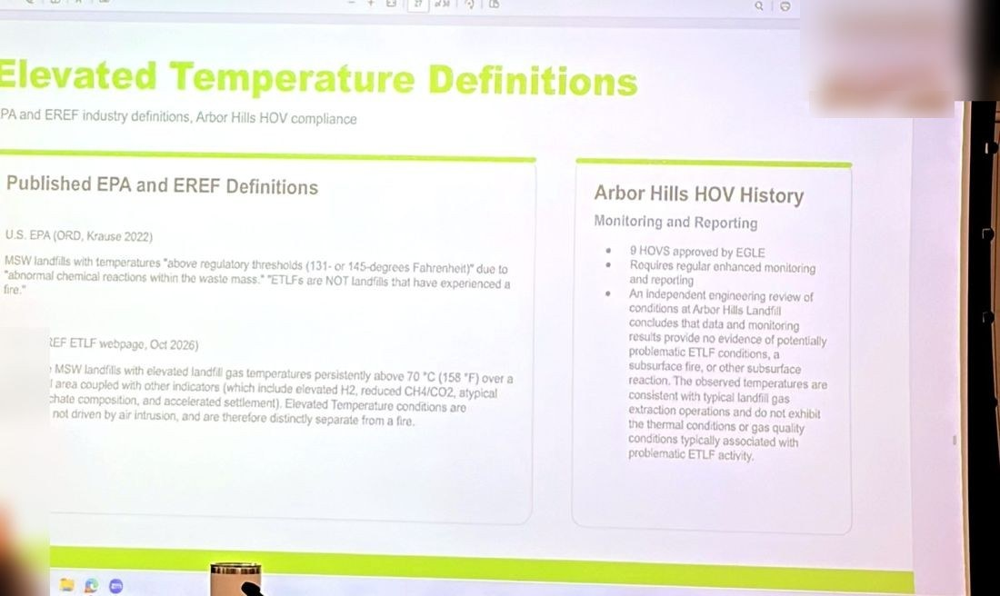
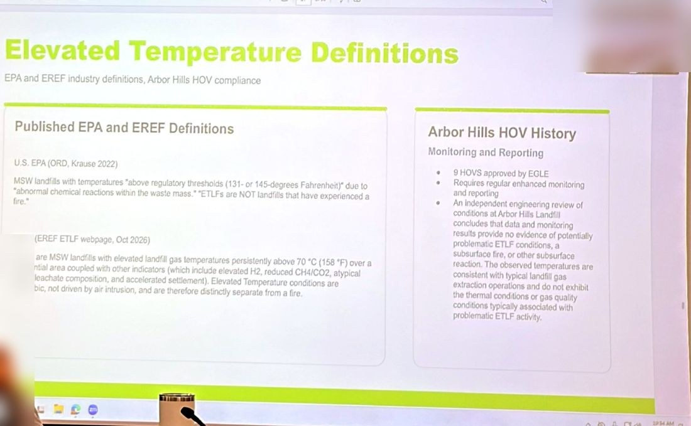
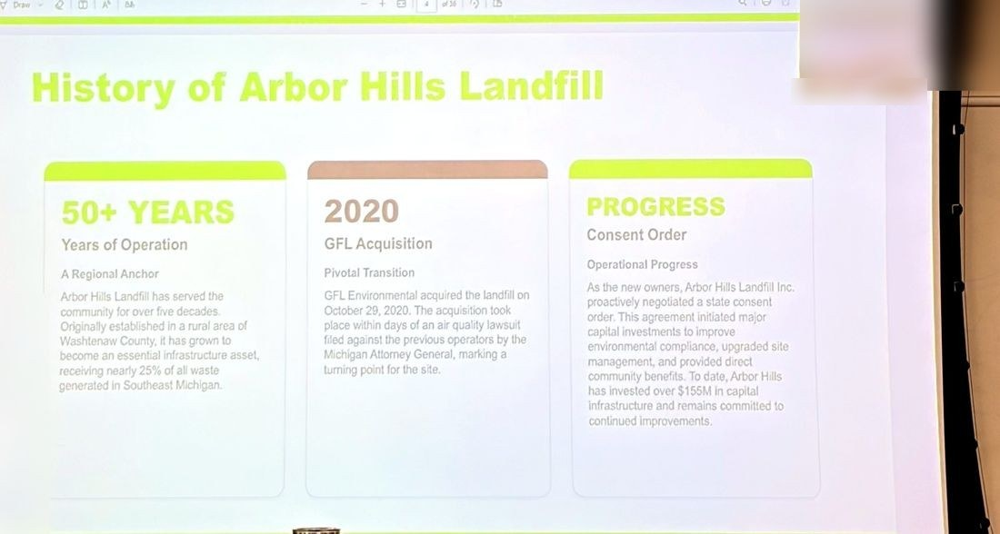

Arbor Hills Monitor
Washtenaw County Materials Management Planning Committee · Arbor Hills Monitor · November 19, 2026 · arborhillsmonitor.org
Statements by GFL, EGLE and the Arbor Hills Monitor, checked against the public record. Prepared by Trisha Kunst, Arbor Hills Monitor; item 10 checks a statement by the author. Corrections: corrections@arborhillsmonitor.org.
Not accurate: the record contradicts the statement. Missing context: accurate as far as it goes, but leaves out something that changes the picture.
Paragraph 5.12 of the 2022 Consent Judgment (a court-entered settlement between EGLE and Arbor Hills Landfill, Inc.) covers "subsurface methane detection exceedances east of Napier Road," where gas has moved underground away from the waste. A November 6, 2026 letter from Assistant Attorney General Danielle Allison-Yokom, answering this fact check's author, states:
EGLE approved the most recent work plan in February 2025. Gas probes are monitoring wells set in the soil outside the waste; they detect methane that has migrated underground through the soil. Their records (GFL probe reports, EGLE FOIA E700131; Consent Judgment quarterly reports) show at least one probe above the lower explosive limit (LEL: 5% methane, the lowest concentration that can ignite) in each of the 24 quarters since GFL took over in October 2020. Paragraph 5.12 is titled "Lower Explosive Limit": a reading above 100% of the LEL is an exceedance, with or without a violation notice. On June 12, 2026, probe AHMP15R2 read 1,658% of the LEL (about 83% methane).

Click to enlarge
Click to enlargeThe step-down condition has never been met for probe AHMP15R2. In GFL's Consent Judgment quarterly reports to EGLE from April 2022 through June 2026, it never went a year without an exceedance; its longest stretch without one was about five and a half months (March 19 to September 3, 2025).

Click to enlargeEGLE's June 16, 2026 inspection found 75 surface locations where methane exceeded 500 ppm above background. The highest, 148,682 ppm (about 15% methane), was at a cover penetration (JB9, Penetration 502R) in the northern active area. GFL told the committee its surveys exclude steep slopes, dangerous areas and active areas, including the northeast corner. Federal rules (40 CFR 63.1958(d)) allow "steep slopes or other dangerous areas" to be excluded. Before the inspection, EGLE's June 15, 2026 records request asked that any excluded area "include a justification for the exclusion provided by the SEM technician."

Click to enlargeEGLE's April 7, 2026 renewal letter approved higher operating values (HOVs: EGLE-approved wellhead temperature limits above the federal standard) for 16 locations (14 gas wells and 2 leachate sumps) through May 1, 2028. GFL's "9" matches the wells with an approved waiver among those that exceeded 131°F in its consultant's March-to-September 2026 review window; "two" matches the gas wells in that window that exceeded 145°F (wells 0279 at 154.6°F and 0313 at 148.5°F). Both figures describe a narrow slice of one review period, not the 16 locations EGLE has authorized.

Click to enlargeThe review is an October 15, 2026 letter from GFL's consultant, CEC. Its wellhead-temperature and methane-to-CO2 evaluation covers only March to September 2026; it also cites drilling and downhole records back to 2020, without the context of gas levels when those downhole records were taken. Table 1 lists a peak of 135.8°F for well AHW272R4 (June 26, 2026). On March 14, 2025, outside the period of this review, the same well reached 177°F, under a 180°F ceiling EGLE approved for it on February 19, 2025.
The review compared each well's six-month average methane-to-CO2 ratio ("The lowest average ratio observed among these wells was 1.21"); an average can hide a short drop. It does not mention the earlier high-temperature episodes (2021 to 2022 and late 2024 to 2025; see item 8) or a 2019 episode under the previous owner.

Click to enlargeIn fiscal year 2025, waste generated from the seven SEMCOG (Southeast Michigan Council of Governments) counties and landfilled in Michigan totaled about 9.35 million tons. Arbor Hills received about 1.76 million tons of it, or 18.9% (EGLE totals include alternative daily cover; without it the share is lower). Other reasonable definitions of the region give 17% to 21%. Figures near 25% appear only when Arbor Hills is compared with other landfills, such as its three nearest neighbors (Sauk Trail Hills, Woodland Meadows and Carleton Farms: 25.6%), not with the waste the region generates.
Percentages must be used carefully, and members are encouraged to ask questions. One example: in fiscal year 2025, 30% of Washtenaw's landfilled waste went to Arbor Hills, yet Washtenaw was only 7% of the waste accepted there (about 135,000 of Washtenaw's 450,000 tons; 135,000 of Arbor Hills' 1.88 million tons).
Contrast the slide's 25% with a statement that is true: Arbor Hills has 3% to 4% of the remaining landfill capacity in Southeast Michigan. At the end of fiscal year 2025 it had 7,219,565 cubic yards of permitted space left: about 4% of the 172,952,209 in the 11 noncaptive landfills in the seven SEMCOG counties, and about 3% of the 238,869,044 in the 16 landfills in the committee's regional capacity assessment. These count permitted space only, not GFL's proposed new landfill.

Click to enlarge| Said in the room (Nov. 18, 2026) | What federal rules require |
|---|---|
GFL: "There's a lot of wells out there in the number of landfills that operate in the 150s, the 160s ... as routine operating temperatures." |
40 CFR 63.1958(c)(1) (effective Sept. 27, 2021): "operate each interior wellhead in the collection system with a landfill gas temperature less than 62.8 degrees Celsius (145 degrees Fahrenheit)." 40 CFR 63.1960(a)(4)(i): "action must be initiated to correct the exceedance within 5 days." If 145°F is not achieved in 15 days: root cause analysis and correction within 60 days. If not corrected in 60 days: corrective action completed within 120 days of the first reading. 40 CFR 63.1958(c)(2) (HOV approval): elevated temperature operation requires a demonstration that it "neither causes fires nor significantly inhibits anaerobic decomposition by killing methanogens." |
With an EGLE-approved HOV, a well may operate above 145°F up to its approved limit; at any other well, a reading at or above 145°F starts the correction deadlines. Calling the 150s and 160s routine blurs that difference.
Above 158°F (70°C), "few methanogens survive" (Krause et al., an EPA-led study, 2023), so a well that hot would have difficulty meeting the demonstration the law requires.
When it began: EGLE records an April 2, 2019 "Elevated Temperature Landfill (ETLF) Event visit" and an April 11, 2019 Violation Notice, both under the previous owner, consistent with monitoring since 2019.
Whether it has changed: read as a process, wellhead temperature is not in control: it does not stay within its limits, the federal standards of 131°F (40 CFR 60 Subpart WWW) and 145°F (40 CFR 63.1958(c)(1)), both of which still apply. The hottest readings reached 177.5°F in 2021 and 182.5°F in 2022, fell to the 150s°F in 2023 and 2024, rose to 177.0°F in March 2025, and have stayed in the 150s°F since mid-2025. Wells at or above 145°F went from 8 in 2021 to 3 in late 2024, 6 in both halves of 2025, and 3 in early 2026. The methane-to-carbon-dioxide ratio shows when reactions likely happened: among readings at or above 145°F, 27% to 35% were below 0.9 (the level GFL's consultant, CEC, treats as a possible sign of elevated-temperature conditions) in each half-year from 2021 through early 2022, and 22% in early 2025. None were in 2023, 2024 or since mid-2025.
The June 16, 2026 inspection letter from EGLE's Air Quality Division states that "approximately 50% of the vertical wells showed signs of impairment which is above average compared to other landfills that SEM inspections have been conducted at." Impaired wells are not collecting gas as designed, for example because of water, heat or damage.
“approximately 50% of the vertical wells showed signs of impairment which is above average compared to other landfills that SEM inspections have been conducted at.”
The rule of thumb is real, but the source is the federal Agency for Toxic Substances and Disease Registry (ATSDR), not EPA. ATSDR's 2001 Landfill Gas Primer, Chapter 2: "As a general rule, emissions of NMOCs double with every 18° F increase in temperature." NMOCs are nonmethane organic compounds. Those found in GFL's September 1, 2026 sample of Arbor Hills landfill gas include benzene and vinyl chloride (both known human carcinogens), toluene, xylenes and ethylbenzene.
“As a general rule, emissions of NMOCs double with every 18° F increase in temperature.”
"Constantly" here means hand readings: a technician visits each wellhead with a portable meter. GFL's reports to EGLE show fewer visits than described: from August 2025 through July 2026 (534 wells), each well was read on average 1.7 times a month; in 58% of well-months it was read once, and in 87% once or twice. (The reports may not list every field visit.) Federal rules require a reading at least monthly, and weekly for a well above 145°F unless EGLE has approved a higher operating temperature for it.
Continuous monitoring exists and has been required elsewhere: sensors on each wellhead can read the well around the clock. At California's Chiquita Canyon Landfill, the air district's March 21, 2024 abatement order required a "real-time, remote monitoring system" for "well pressure and landfill gas temperature at different well depths" on every well in the reaction area by October 22, 2024.
GFL's point, that each well's readings reflect the waste around it, is accurate. What it leaves out: the wells share one vacuum system, and the hot wells are clustered. A landfill gas system is "a large number of interconnected vertical gas-collection wells and horizontal pipes in trenches," so a change at one well changes what its neighbors collect (Loci Controls and EPP Services technical paper).
At Arbor Hills, EGLE's February 19, 2025 letter approving a 180°F limit for well AHW272R4 says the well "is currently situated within a 250-foot radi[us] of WOI AHW285R3," another designated hot well, and that "the predecessor well AHW272R3" was already a Well of Interest in 2022. The replacement well later ran hot too (177°F, March 2025). The Arbor Hills Monitor's thermal map of GFL's readings groups the wells that peaked at or above 131°F into two areas, an eastern hot core and a western warm field.
“The well is a vertical extraction well that is currently situated within a 250-foot radi[us] of WOI AHW285R3.”